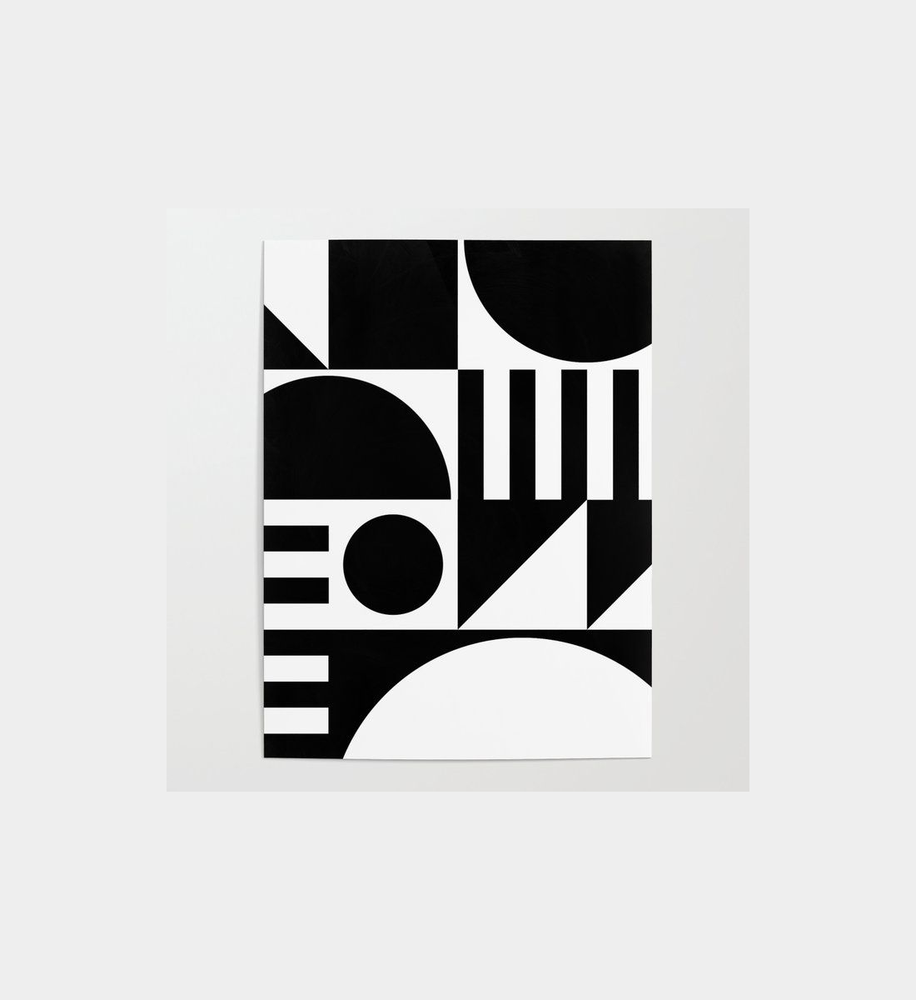
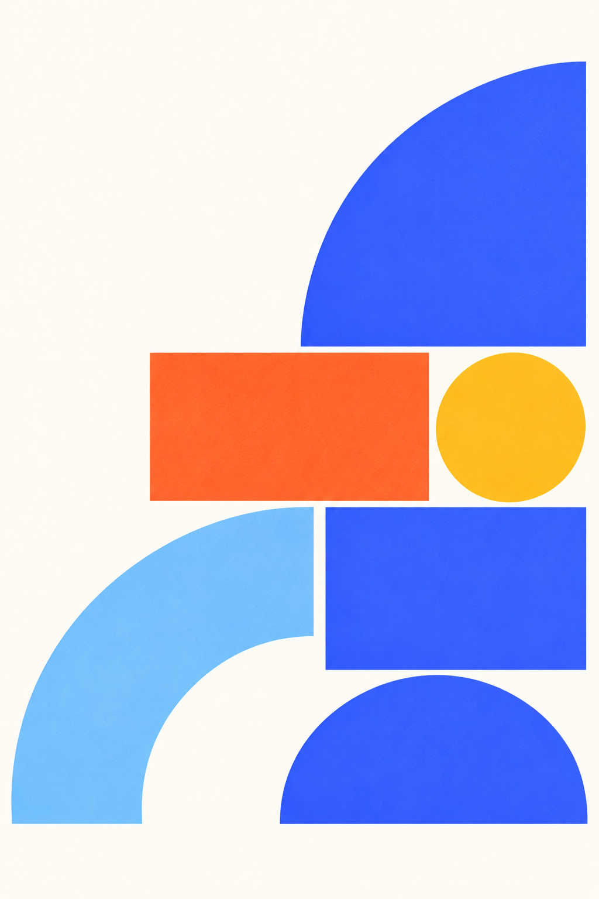
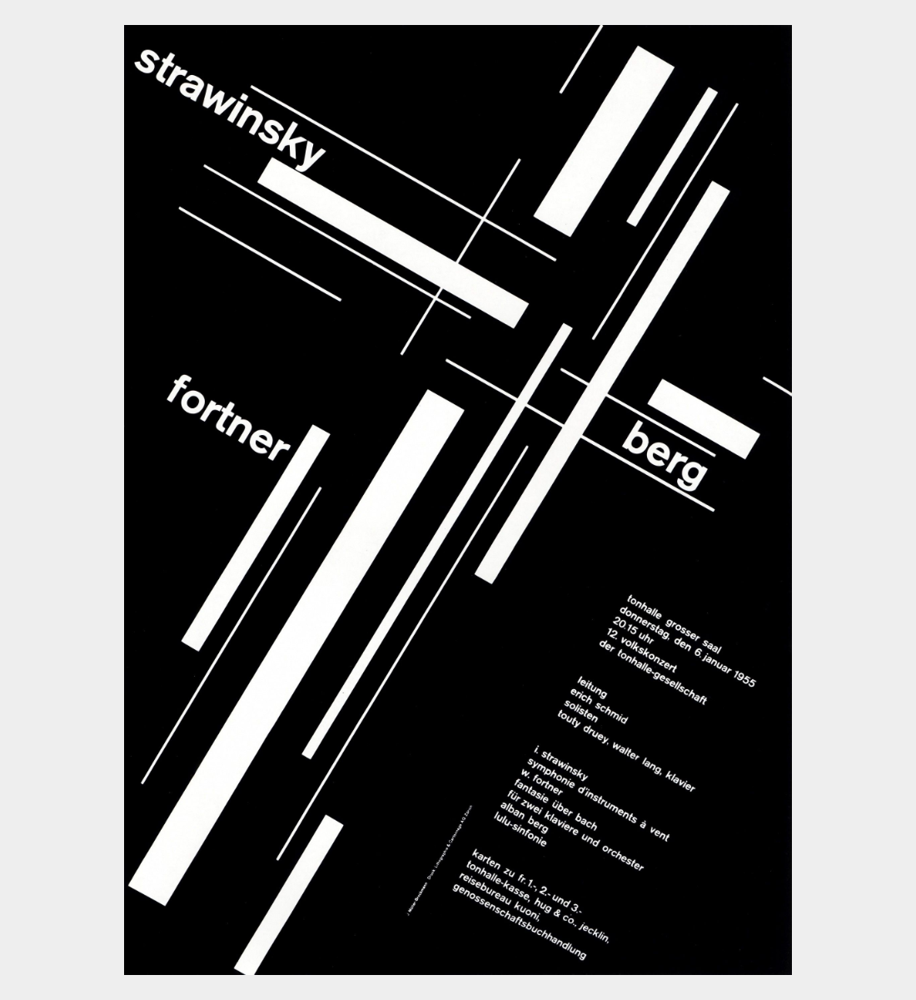
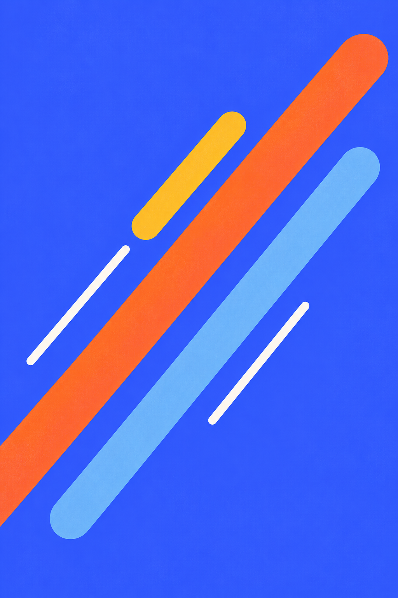

Hai hướng poster MELAB
Từ hình học rõ và chuyển động thị giác trong tài liệu thương hiệu, mỗi hướng ghép một tham khảo cấu trúc với một hình thích nghi mới.
Hình học
Khối đặc và khoảng rỗng luân phiên; các bán kính và mép chung giúp hình có trật tự.

Chỉ nghiên cứu cách tổ chức hình; chưa có quyền phát hành lại hình nguồn.

Ảnh gốc tạo bằng AI, 1024 × 1536 px. Giữ nguyên toàn ảnh; chữ và logo đặt riêng khi ứng dụng.
Nên dùng
Dùng cho phần mở đầu một nội dung học tập; giữ vùng trái phía trên cho tiêu đề.
Cần tránh
Tránh lặp nguyên sơ đồ ô của ảnh tham khảo hoặc nhét thêm quá nhiều hình nhỏ.
Chuyển động
Một hướng chéo chính, độ dày khác nhau và khoảng cách đều ý tạo cảm giác tiến lên trong hình tĩnh.

Chỉ nghiên cứu cách tổ chức hình; chưa có quyền phát hành lại hình nguồn.

Ảnh gốc tạo bằng AI, 1024 × 1536 px. Giữ nguyên toàn ảnh; chữ và logo đặt riêng khi ứng dụng.
Nên dùng
Dùng khi cần nhấn bước tiếp theo hoặc quá trình thử nghiệm; đặt chữ trong vùng xanh yên phía trên trái.
Cần tránh
Tránh chéo nhiều hướng, đặt chữ lên dải màu hoặc đưa tên, ngày và hình riêng của mẫu tham khảo vào MELAB.
Bảng nghiên cứu cục bộ. Ảnh tham khảo có nguồn Pinterest và được lưu trong bản cấu trúc đã khóa; quyền sử dụng công khai chưa được xác nhận. Hình tạo mới là đề xuất, chưa trở thành tài sản thương hiệu chính thức. Các dải màu của hình chuyển động có chủ đích chạm mép; giữ nguyên khung ảnh khi đặt vào mẫu.